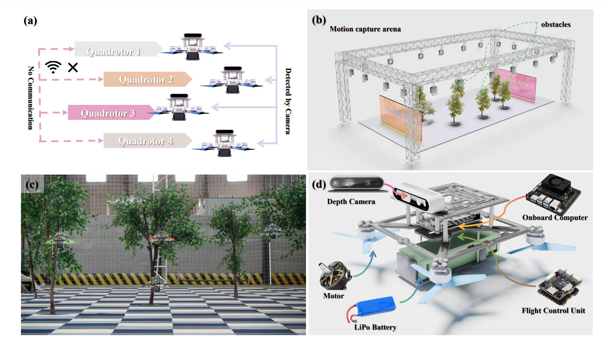
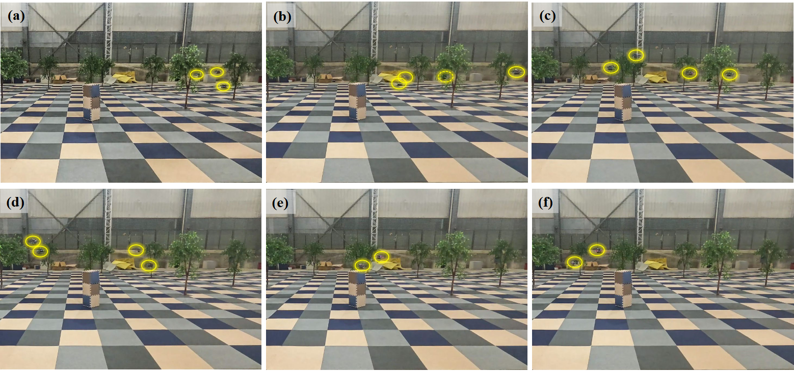
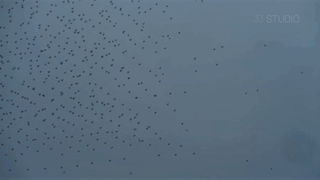

Under Review · Swarm Robotics
MP-CDE: Motion Planning for Autonomous Quadrotor Swarm in Communication-Denied Environments with Active Perception
Manuscript under review

Abstract
Overcoming communication constraints remains a critical challenge for autonomous quadrotor swarms in practical deployments. Existing solutions often assume ideal communication conditions and degrade under communication disturbances.
MP-CDE is a motion planning framework for communication-denied swarm navigation. The method exploits coupling between aerial mobility and visual perception, and uses dynamic yaw optimization so each quadrotor can jointly maximize environment awareness and maintain flight safety.
Simulations and real-world experiments show robust swarm navigation under complete communication blackouts.
Key Visuals



PDF Preview
Download Full PaperCitation
Under review. Citation will be updated after publication.